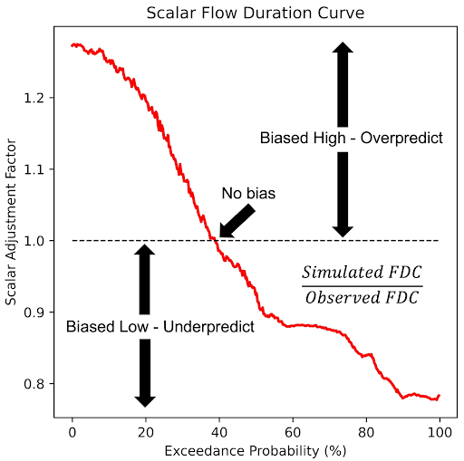

Bias Correction and SABER
RFS exhibits biases that can limit its precision, prompting the development of a bias correction approach. To correct these systematic biases at instrumented locations, we propose the Monthly Flow Duration Curve Quantile-Mapping (MFDC-QM) method. This method targets biases related to flow variability and correlation. RFS does not assimilate observed streamflow data into its initial calculation. However, the bias-correction technique allows for the global data to be applied locally. Local users can have more confidence in their data because they can know that their observed data is able to be used to improve the modeled data at their location.
After applying the bias correction, we observed a significant improvement in the distribution of bias and variability ratios, with a slight improvement in correlation values across the stations, resulting in more reliable simulations and improved Kling-Gupta Efficiency (KGE) metrics: bias, variability, and correlation.
The following presentation discusses how RFS has been validated and gives details of the methods of the bias-correction methods.
GEOGLOWS - Bias Correction.pdf
Interactive Learning - Bias Correction
To dive deeper into the analysis of bias correction and performance evaluation, we have prepared an interactive Google Colab notebook. This notebook provides step-by-step guidance for conducting these analyses using real-world data from the Magdalena River at El Banco in Colombia. It covers both bias correction and performance evaluation, allowing you to engage with the data and methods discussed in this guide: Bias_Correction_GEOGloWS_ECMWF_Hydrological_Model_Retrospective_Simulation Colab.ipynb.
SABER (Stream Analysis for Bias Estimation and Reduction)
The SABER method is a bias correction tool designed for large hydrologic models like RFS, specifically addressing the issue of model biases in both gauged and ungauged river basins. SABER uses flow duration curves (FDC) to compare the observed discharge with the simulated values from hydrologic models, identifying and correcting biases. For ungauged locations, where direct observations are unavailable, SABER uses the scalar flow duration curve (SFDC).
Unlike bias-correction, which each institution performs locally, SABER is performed by the RFS team and is not done by the end users. We use the gauge data made available to us to perform an improvement to all the model results. This process is still in experimentation and is not currently being applied to the data accessed by the end-users. We hope for it to be applied in future versions of RFS.
SABER allows the bias correction process to extend to ungauged basins by analyzing similar watershed behaviors based on spatial proximity and clustering of flow regimes. This method is particularly useful for regions where data scarcity limits traditional calibration, such as in global models like RFS, ensuring more accurate discharge forecasts across large spatial domains.
SABER works by comparing simulated discharge data to observed values at gauged locations to detect high or low biases. It applies machine learning clustering techniques to group watersheds with similar flow characteristics, helping to extend bias correction from gauged to ungauged basins. SABER's process includes calculating SFDCs for different exceedance probabilities, dividing the simulated flows by the corresponding SFDC values, even in regions affected by dams or reservoirs.
